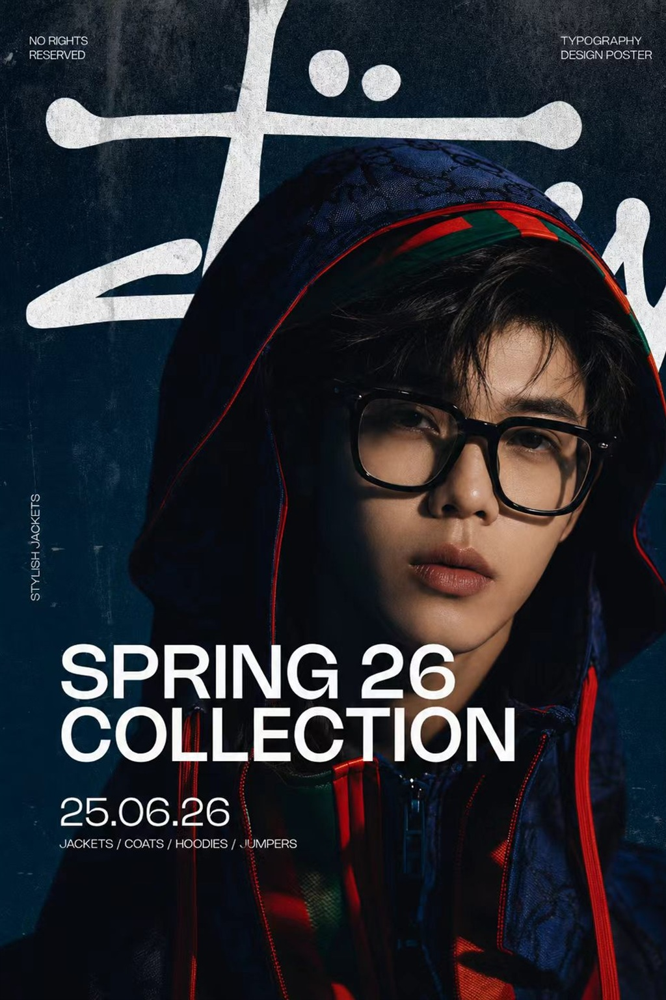
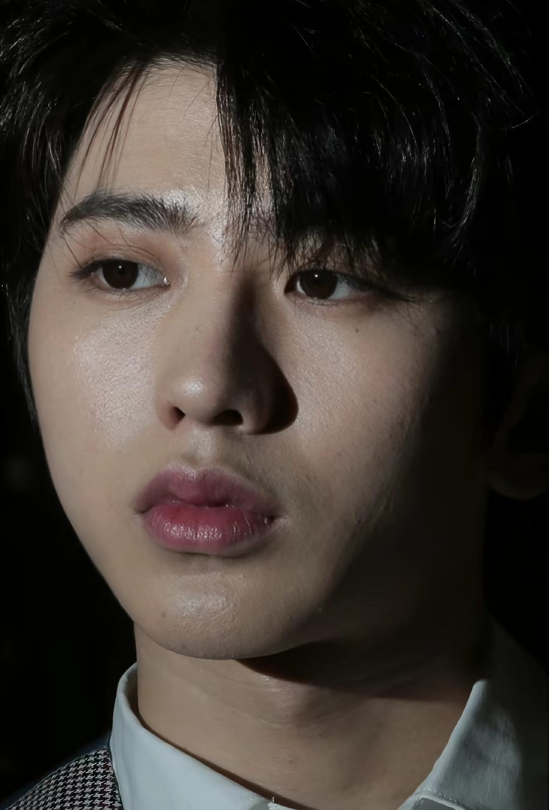
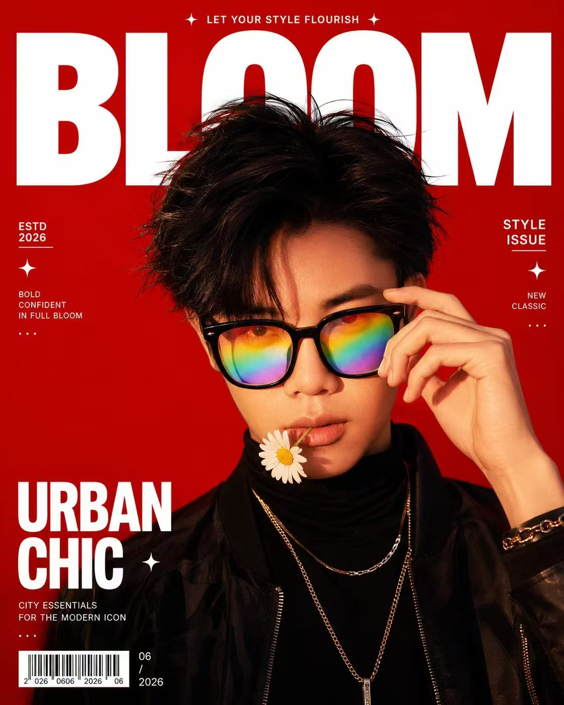
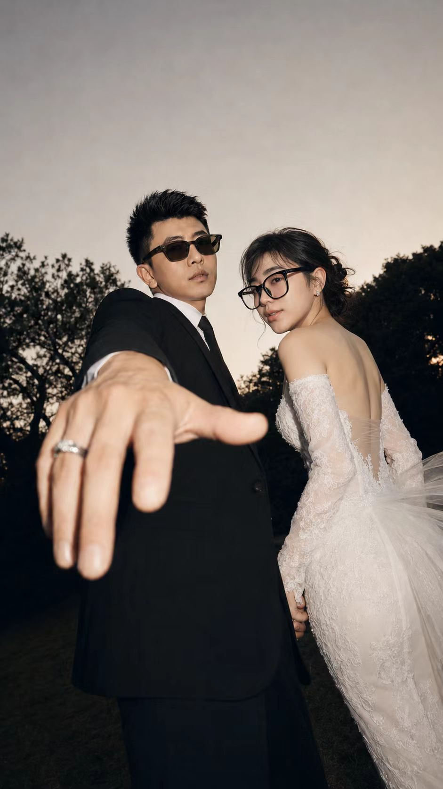
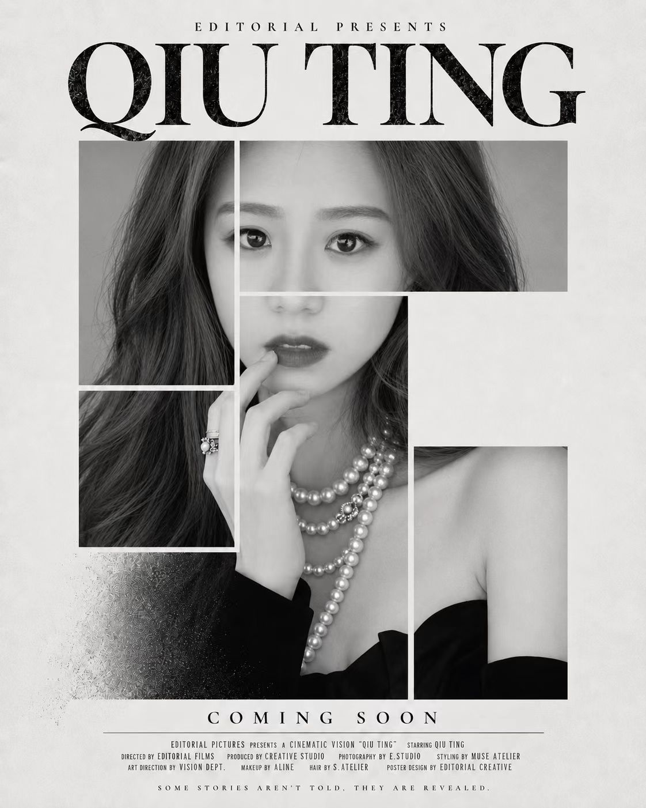
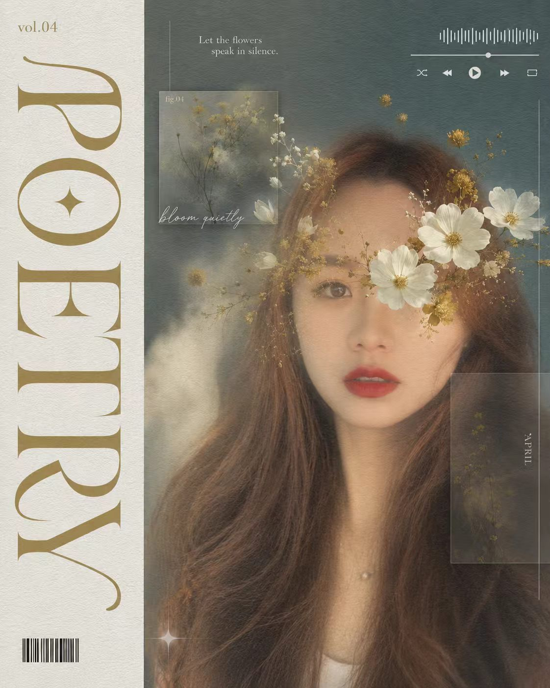
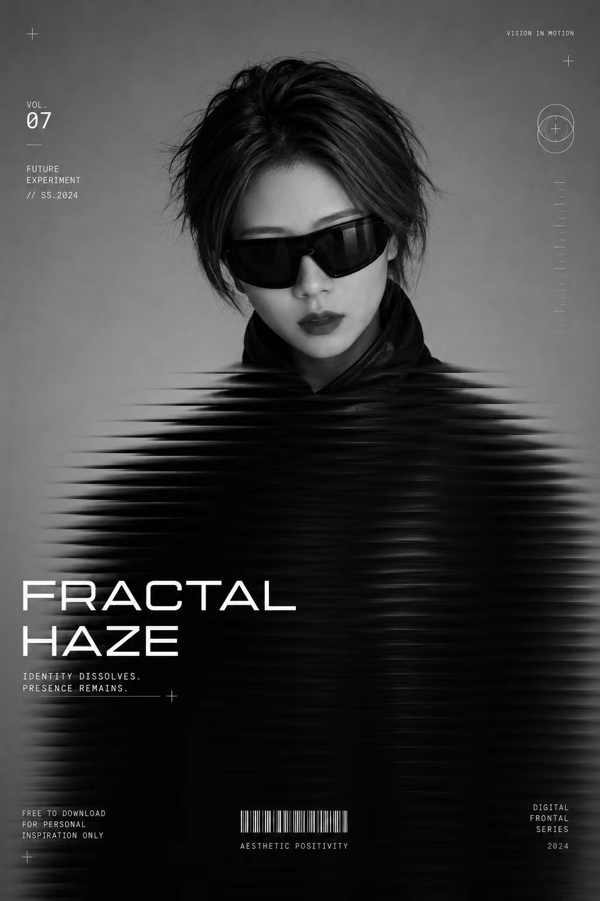

After帅版成片
左边是被重新导演后的成片，右边是原始照片。不是单纯美化，而是把一张照片从“记录”推向“叙事”。


每张图都给人物一个新的位置：电影主角、婚礼新人、封面人物、社交内容入口，或者某种更暗、更克制的自我。

高饱和红色、封面文字和直视镜头，让人物从生活照进入更强烈的视觉身份。

保留真实亲密关系，同时加强仪式感、故事感和适合传播的画面张力。

用版式和黑白关系把普通头像改造成更稳定、更有记忆点的封面肖像。

柔雾、花卉和细节叠层，让图片更像一个可以被点开的内容入口。

用低饱和、黑白噪点和视觉消散感，把人物做成故事里的中心。
一张图最终能不能成立，取决于它有没有自己的空气、温度、距离和被相信的理由。
风格不是滤镜的名字，而是人物被放进某种光线以后，自然产生的身份。
标题、日期、编号和碎片信息会把一张图从“漂亮”推向“像真的存在过”。
太光滑的图没有呼吸。纹理、颗粒、阴影和边缘的不确定性，反而让画面可信。
图像不是答案，是一种被看见的气场。真正变化的是别人重新理解你的那一秒。
作图不是把人变得更完美，而是替一张照片找到它本来没有说出口的身份。光影、文字、材质和留白只是入口，真正被重塑的是观看者相信它的那一瞬间。